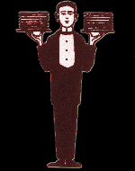

 |
| A
pesar de su noble abolengo, los esposos se han inclinado por unos agasajos sencillos y sin oropel. Respondiendo a las insidias de la familia de la novia las celebraciones durarán tres días y tres noches y se desarrollarán en los pabellones del Generalife, acondicionados para la ocasión. Se han tallado, incluso especialmente, esculturas leoninas que darán fasto y señorío y la artillería de plata será desenpolvada de los arcones del fisco. Doscientos camareros para 50 invitados se encargarán de la seguridad de la fiesta y de animar a los más reticentes a marcharse. Numerosas personalidades han confirmado ya su asistencia al banquete, entre los que destacan el presidente Afnar y una amiga; el Mani, antiguo miembro de Barón Rojo ; el tío Calambres, que dió su sangre por su querer; Roger Moore y su esposa; Meredick Foster , estrella en "Starsky y Hutch"; José María "Patatafrita" López , magnate de la comunicación y estrella multimedia; el Marce y su circo de pulgas; Gerard Fetén de la Campiña y su excusada acompañante; Lorenzo Oliver, de los Oliver; Chiqui Artiach y Jerry Toccandent, famosos cómicos de opereta, y un sinfín de estrellas del video y la televisión que se han apuntado a los festejos. La celebración se estrenará con un fino español acompañado de Croquetas redondas al Aire de los Picos; Frelenguadas de Espinilla de cordera al Molusco Cascao; Barretes finas de perlenca dorada a las especias de Gratín de los Agostos y nueces peladas a la nata, colada con Pisuergas de confeti. La comida propiamente dicha consistirá en una Sopa de col tibetana aclarada al Tamiz de los Infiernos; unos Bocaditos de almohadillas de Cotorra vieja a la Hornada del Desierto y unos Ojos de Luna Graseados con panceta. De primeros serán las langostas las estrellas, aderezadas a la Crema Escocesa de la Tinaja; seguiran los churlos a la Brasa Lenta de las Cañadas con Tubérculos Porlasnoches y e n s a l a d a d e salmuera a la Orden del Santo Grial. Finalmente Osobucco a la cascada de tomate y a los postres bulerías al glasé y fandanguillos con melón. Caldos de primera y licores variados, como no podía ser menos, completan el ágape. El resto de los mortales soñaremos ese día con comida |
.